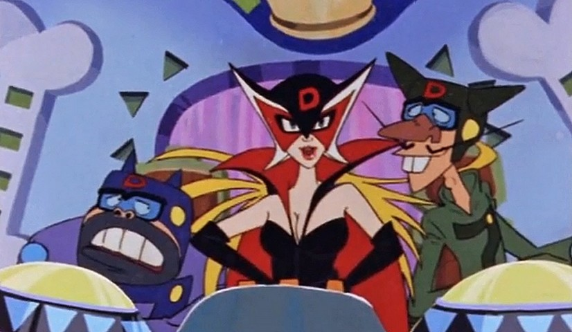

Yoru no Yatterman licencié!

Salut à tous,
J'ai le regret de vous annoncer que Yoru no Yatterman est maintenant licencié par Viewster (on dirait une notice nécrologique xD ). C'était prévisible aussi, une bonne série comme ça ne pouvait passer inaperçue!
Les liens de l'animé seront donc retirés du site d'ici la fin de la soirée, mais ne l'abandonnez pas pour autant, ce serait dommage ;)
Je vais considérer le fait de prendre une autre série a la saison prochaine, mais il est probable que je me consacre aux Blurays de Future GPX Cyber Formula, histoire que ça avance un peu.
A plus pour de nouvelles aventures! On se quitte sur cette image de l'ancienne série, les méchants Dorombo dans toute leur splendeur!